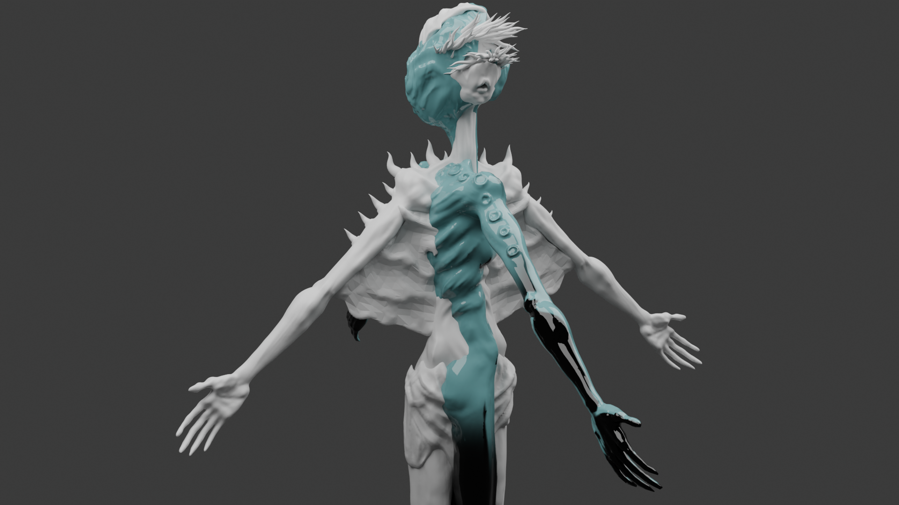
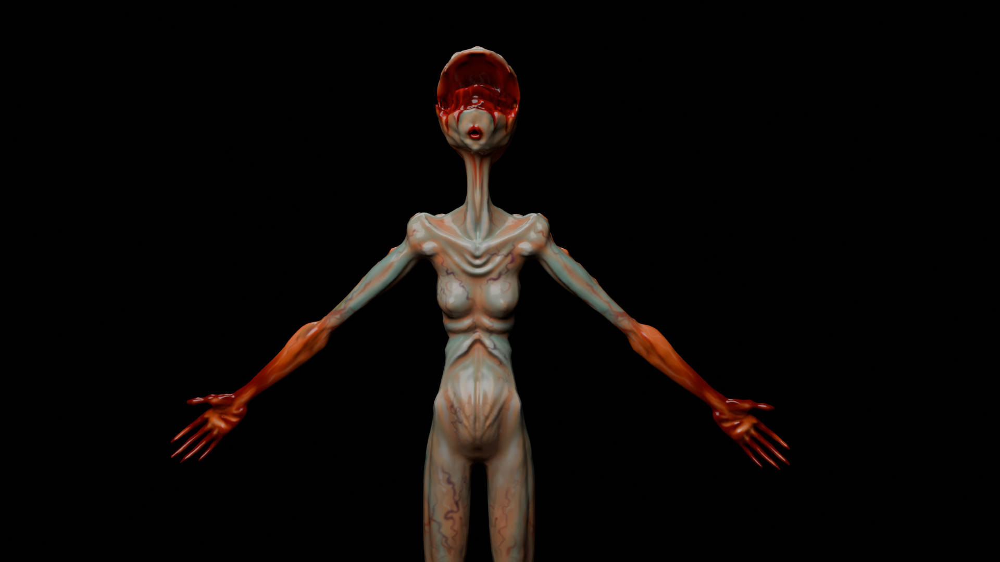
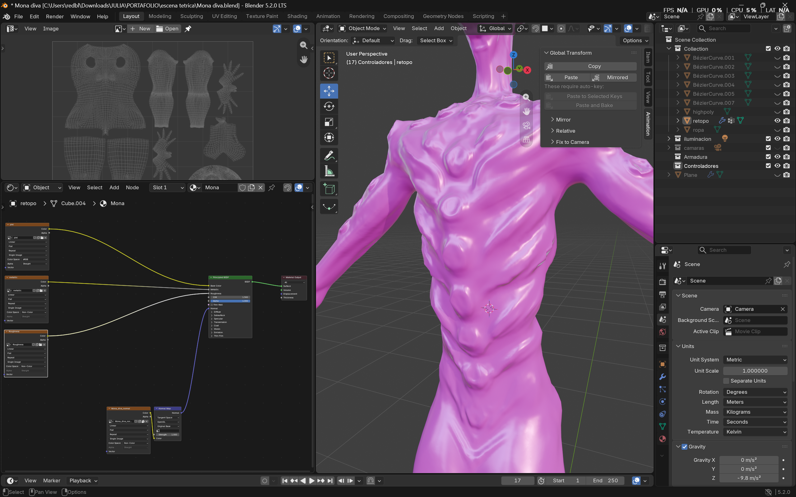
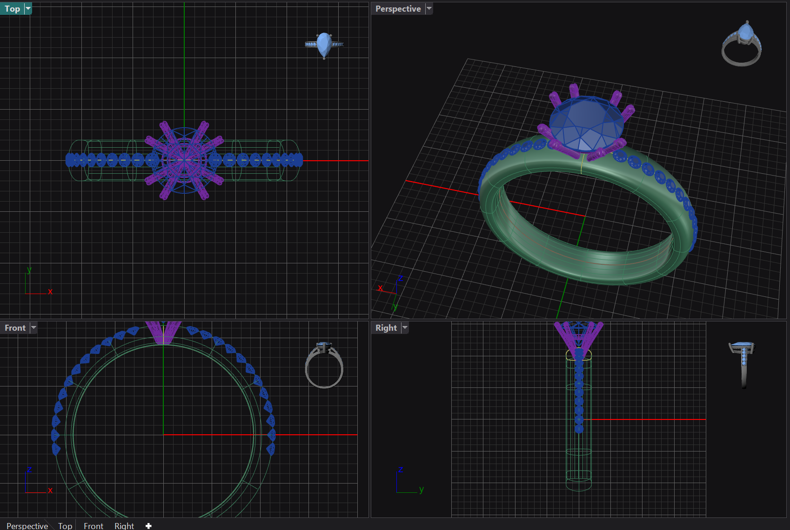
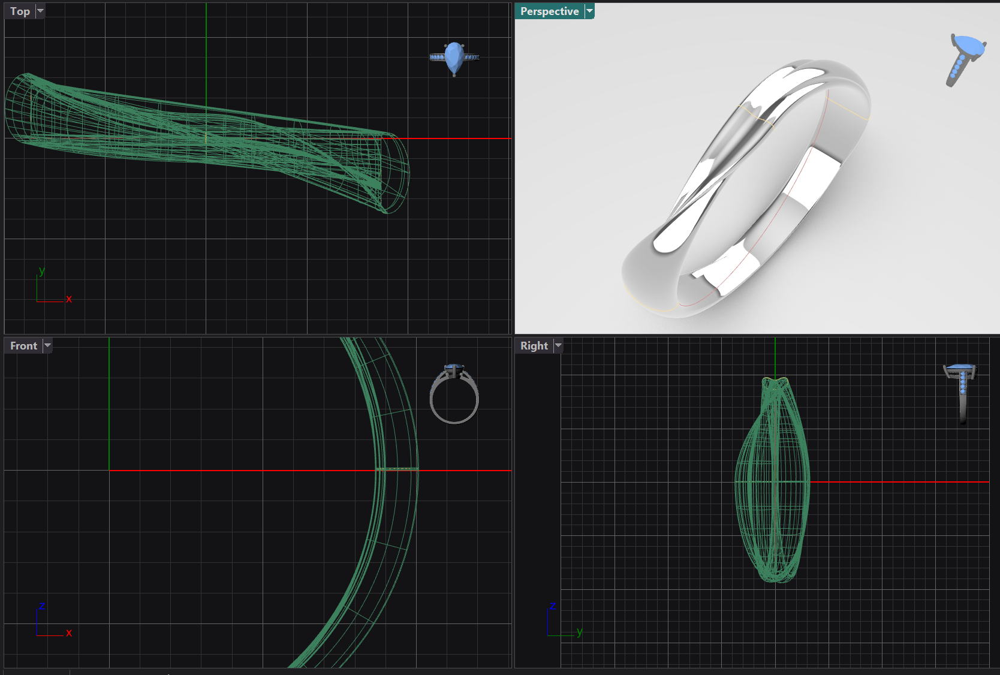
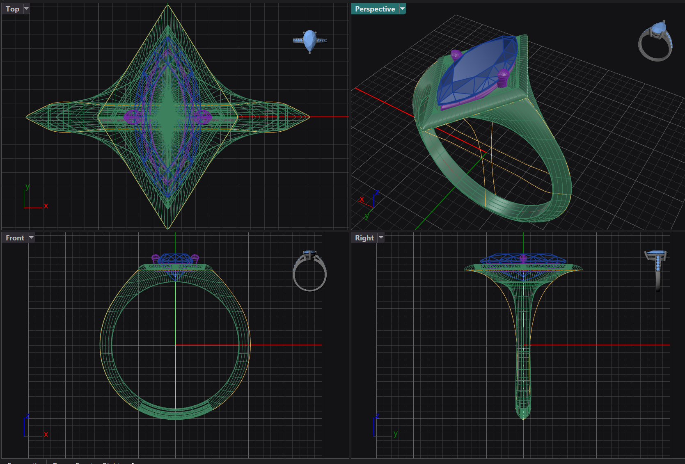

Proceso del personaje
PORTAFOLIO · 3D Y ANIMACIÓN
Luz azul
y movimiento.
Soy Julia. Creo personajes, modelos 3D, props y animaciones para productos, historias y espacios.
Ver proyectos ↓
PERSONAJES · MODELADO · TEXTURAS · RIGGING
JULIA · PORTAFOLIO 3DPERSONAJES · PRODUCTO · ESPACIOS2026
SELECCIÓN DE TRABAJOS
Proyectos 3D
Modelado, texturas, rigging, animación y visualización. Cada proyecto incluye las tareas que realicé.
PERSONAJES · MODELADO, TEXTURAS Y RIGGING
Personajes
con presencia.
Creación de personajes 3D para cortometrajes, videos y videojuegos.
Modelado 3DUVs y texturasRiggingPersonajes


01 — ANIMACIÓN DE PRODUCTO
Movimiento,
cámara y luz.
Animación de producto con movimiento de cámara e iluminación para presentar la pieza.
AnimaciónCámaraIluminación
01 / ANIMACIÓN DE PRODUCTO
02 — PRODUCTO Y PROCESOS INDUSTRIALES
Del modelo
a la escena.
Animación y visualización de productos y procesos industriales. Realicé los modelos 3D, las texturas, el movimiento de cámara y la iluminación.
Modelado 3DTexturasCámaraIluminación
ANIMACIÓN · VISUALIZACIÓN
DETRÁS DEL PROCESO
Modelado y desarrollo de producto
Detrás de cámaras · animación de procesos industriales
Creación de modelos 3D para producto
Productos funcionales y piezas de refacción
OPERACIÓN
GALLETA
CORTOMETRAJE · ANIMACIÓNGALLETA
03 — ANIMACIÓN DE PERSONAJE
Operación
Galleta.
Trabajo de personaje para un cortometraje. Creé modelos 3D y me encargué del modelado y rigging del personaje; también participé en el guion y el texturizado.
ModeladoRiggingAnimaciónTexturizado
Operación Galleta · Cortometraje
04 — VISUAL · PARTÍCULAS Y MATERIALES
Partículas
en movimiento.
Animación de cámara y creación de partículas mediante Geometry Nodes. La textura está elaborada con Texture Nodes.
Animación de cámaraPartículasGeometry NodesTexture Nodes
VISUAL · NODOS
05 — MODELADO DE OBJETOS
Joyería y props
Creación de modelos 3D para joyería y props: dijes, anillos y pendientes.



Proceso de modelado · joyería
Exploración de anillo 3D
Anillo Matrix · recorrido 3D
Variación de diseño
06 — DISEÑO DE ESPACIO
Un espacio
en movimiento.
Diseño y animación de un espacio, presentado mediante un recorrido de cámara.
Diseño de espacioAnimaciónCámara
DISEÑO DE ESPACIO
3D
ART
ART
PERFIL
Crear en
tres dimensiones.
Soy Julia, ingeniera en Tecnologías Interactivas. Desarrollo proyectos 3D y busco soluciones visuales para tus ideas. Mi experiencia incluye personajes, modelos de producto, props y piezas de joyería, además de animación, texturas, rigging, cámara e iluminación.
Modelado 3DRiggingUVs y texturasAnimaciónCámaraIluminaciónNodos
CONTACTO
Hagamos algo
que se vea.
Estoy buscando oportunidades en animación, modelado 3D, personajes y visualización de producto.
lia22gonz@gmail.com ↗Disponible para oportunidades y colaboraciones.